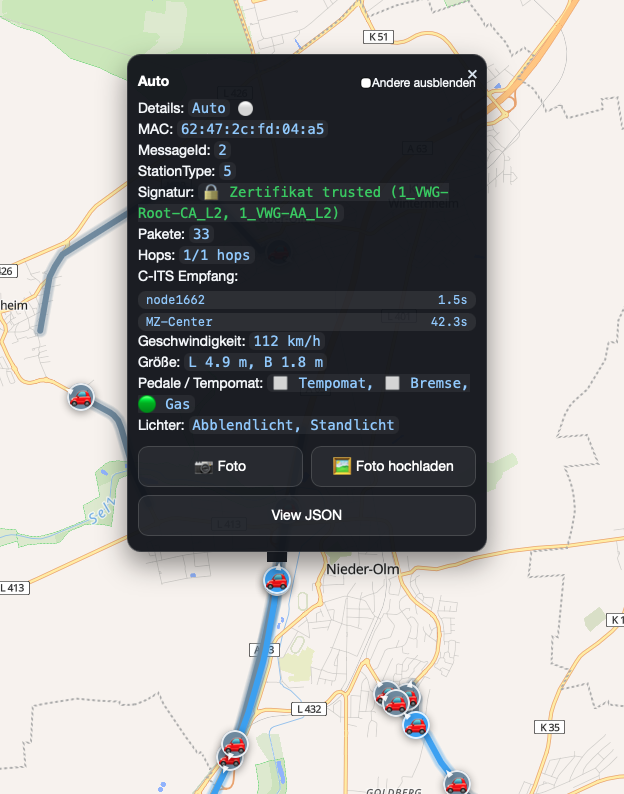
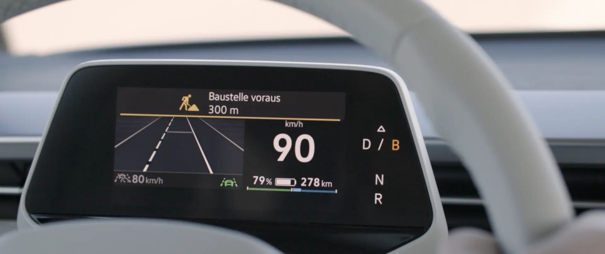
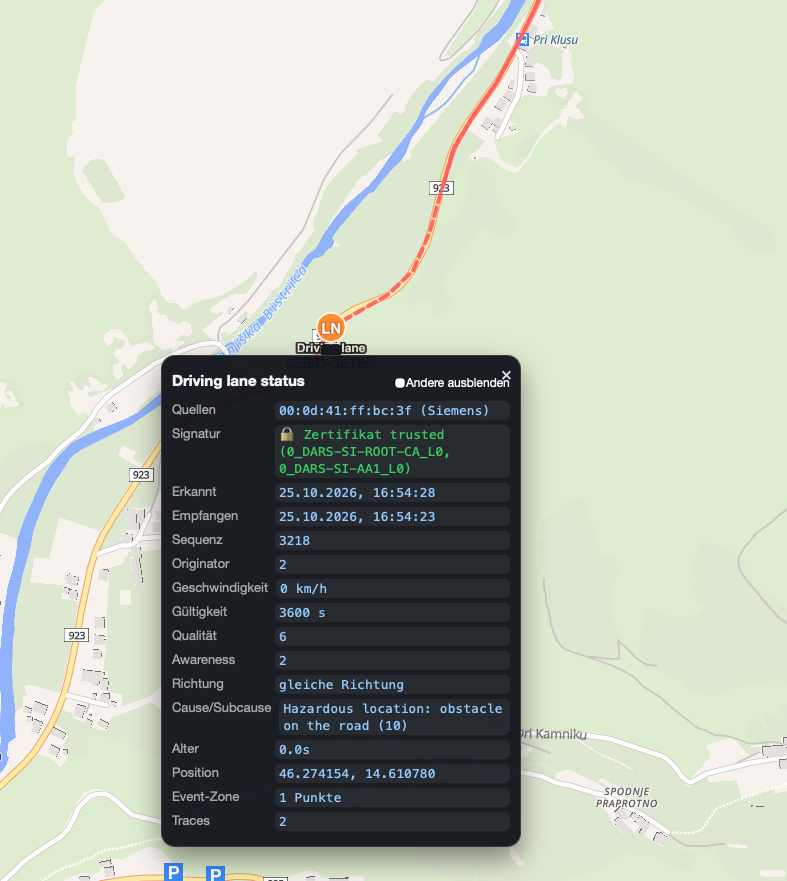
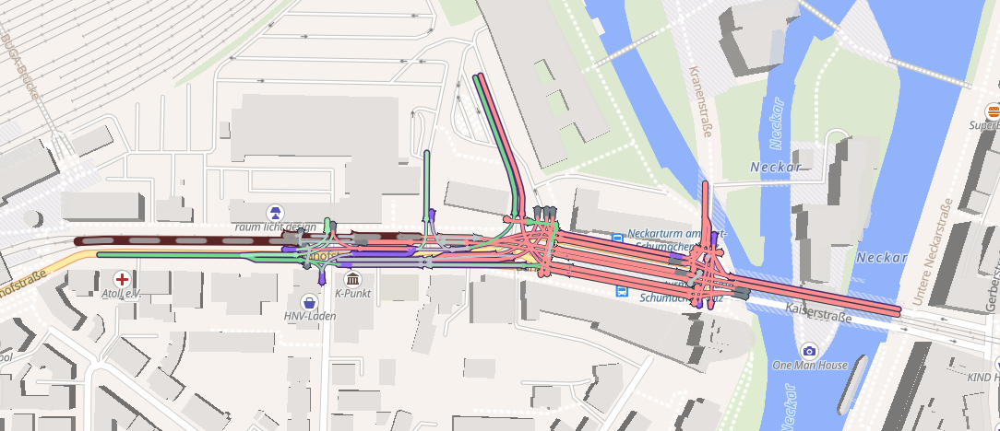

All Cars Are Broadcasting
Die Public-Key-Infrastruktur der (Daten)Autobahnen
Q Misell
Die Heilbronner Chaos Party 2026
30th of October 2026
Coöperative Intelligent Transport Systems (C-ITS)
- Hello I (the car) exist!
- Speed
- Location
- Intentions

Environmental Notifications
- Lane closures
- Upcoming hazards
- Emergency vehicles coming from behind
- Animals on the street


Traffic Light Information

How does this all work?
- ITS-G5 / 802.11p
- aka Wi-Fi without association
- aka yelling Wi-Fi frames into the void
- a simple ESP32 can send these
So who do we trust?
- Just yelling into the void isn't secure
- People can lie (shocker!)
-
Protect against:
- Fake hazards
- Fake speed limits
- Fake green lights
- User privacy?
The solution?
✨ PKI ✨
(Public-Key Infrastructure)
this time we try not use a private key of 4
Don't we have enough PKIs to go round?
PKIs will continue until morale improves
The PKI everyone knows and loathes - WebPKI
- Puts the 🔒 in your browser
- X.509 certificates
- "I am
example.com, signed, a CA"
C-ITS certificates
version 3
type explicit
issuer sha256AndDigest: 1a2b3c4d5e6f7081
toBeSigned {
id none
validityPeriod { start 2026-10-30, duration hours: 168 }
region identifiedRegion: { countryOnly 276 }
appPermissions {
{ psid 36, ssp bitmapSsp 01 FF FC },
{ psid 37, ssp bitmapSsp 01 FF FF FF }
}
verifyKeyIndicator verificationKey: ecdsaNistP256 { ... }
}
signature ecdsaNistP256Signature { ... }
The EU copied the US's homework
- American standard: IEEE 1609.2 - Wireless Access in Vehicular Environments
- Europe
stoleborrowed it, with modifications - Compact ASN.1 OER encoding
Why not just use X.509?
-
Size
- A CAM is a few hundred bytes, sent up to 10 times a second
- An X.509 certificate is easily over a kilobyte
-
Privacy
- A certificate with your name in it is a tracking beacon
-
Wrong question
- X.509 answers "who are you?"
- A car needs to know "are you allowed to say this?"
Signing every message
- Every single message is signed (ECDSA)
- Normally only the 8-byte certificate digest is attached
- Full certificate about once a second
- Or when someone asks: "who's this
1a2b3c4d…?" - Receivers cache certificates they've seen
- But how do we know the certificates are trustworthy?
The hierarchy
The two kinds of certificates
Enrollment Credential
- Identifies the car
- Long-lived, not privacy preserving
- These are never sent openly
Authorization Ticket
- Messages are signed with these
- Anyone can see these
- Short-lived, no identifying information
Anonymisation
- Cars receive batches of valid ATs
- Swap AT (and MAC address) regularly
- In theory: you can't follow a car through town
- In practice: a car that's in the same place doing
the same speed is probably the same car - Volkswagen also forgets to reset their packet sequence numbers
So how does it work in practice?
Hint: eeeeh it could be worse
Regional Validity
- In theory a certificate can be restricted to geographic regions
-
Examples:
- A circle
- A polygon
- A country
- A region of a country
- In practice, nobody implements this
Public Keys
In spite of ostensibly being compact, one can be very verbose with keys
EccP256CurvePoint ::= CHOICE {
x-only OCTET STRING (SIZE (32)),
fill NULL,
compressed-y-0 OCTET STRING (SIZE (32)),
compressed-y-1 OCTET STRING (SIZE (32)),
uncompressedP256 SEQUENCE {
x OCTET STRING (SIZE (32)),
y OCTET STRING (SIZE (32))
}
}
Signatures
These are just wild
EcdsaP256Signature ::= SEQUENCE {
rSig EccP256CurvePoint,
sSig OCTET STRING (SIZE (32))
}
- An ECDSA signature is two integers
- For some reason they decided to let you represent r
as either an integer (x-only) or a compressed/uncompressed point R - The official reason: "to allow for fast verification"
- Almost no library implements this
- In practice one must compute
r = R.x mod nfor every signature verification
Not all trust lists are equal
L1 / L2: Production
- Audited Root CAs
- What real cars on
real roads should trust
L0: Testing
- Root CAs are not audited
- "Experiments and deviations"
from the standards allowed - For test and integration purposes only
- In reality: heavily used in production
Certificate trust in reality
- Slovenian Motorways (DARS): L0
- Graz: L0
- Heilbronn: L0
- Vienna: Unsigned
- Ulm: Unsigned
- Bern: Unsigned
Meanwhile, on the L0 trust list...
- Checked every Root CA's Distribution Centre
- 15 Root CAs had DCs that were misconfigured or entirely offline
- Asked the EU what they think of this
The EU's answer
strictly only intended for testing purposes of C-ITS Services
i.e. leaving things in a broken state is A-OK
Let's become a Root CA!
How hard can it be?
Step one
Implement this weird certificate format
It isn't X.509, so openssl won't cut it here
Step two
Email the Root CA Certificate to the EU
Step three...
Oh, wait we're done!
For L0 the EU just check the certificate is technically valid
- No audit
- No checking intent
- No key security
- No Certificate Practice Statement
Anyone can do it!
How can I have a Root CA?
 TheEnbyperor / c-its
TheEnbyperor / c-its
- Implementation of the C-ITS security architecture
- All the code needed to generate various kinds of certs
Question time!
Email: q@magicalcodewit.ch
Fedi: @q@glauca.space
Slides at magicalcodewit.ch/dhcp26-slides/